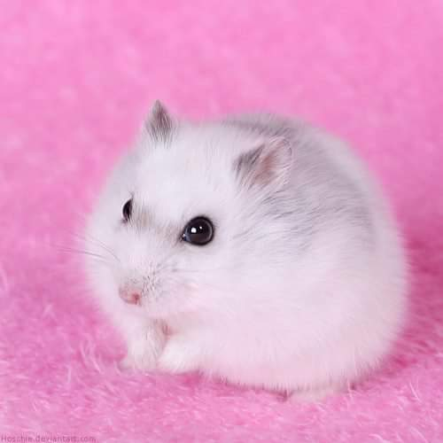

Procure um habitat adequado para o seu pequeno Roborovski. A melhor opção é adquirir um terrário ou uma gaiola clássica com barras de metal suficientemente pequenas para impedir o animal de escapar. Não esqueça que é muito inteligente e elástico. A sua alimentação deve ser baseada em sementes pequenas para se adaptar ao seu pequeno corpo, não escolha qualquer tipo de ração comercial. Assim como outros hamsters, deve receber a sua dose de fruta e verdura, embora o Roborovski possa consumi-la praticamente todos os dias.

Anivia
Anivia
Hamster Roborovski: O hamster Roborovski possui um caráter independente, nervoso e, em alguns momentos, rabugento, uma vez que é um animal noturno que não reage bem se alguém o acordar. De qualquer forma, o seu caráter também depende da sua personalidade pois existem hamsters Roborovski brincalhões e simpáticos.